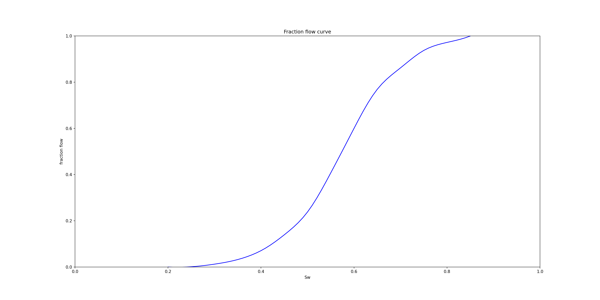
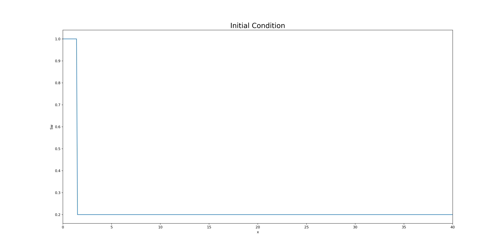
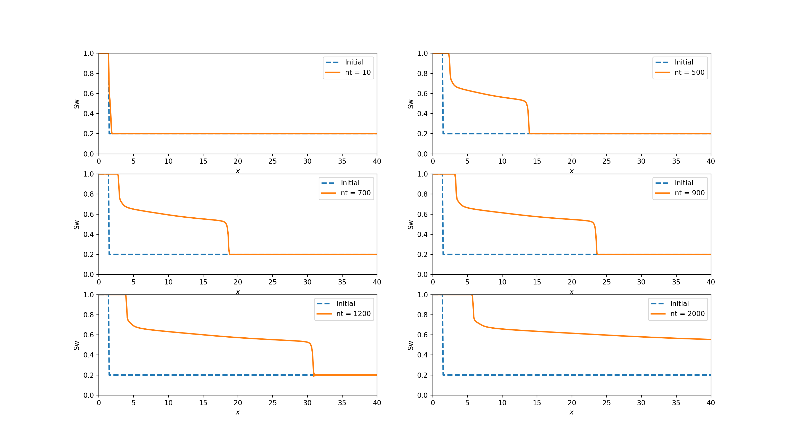

11 Rock Properties
11.1 Surface and Interfacial Tension
In dealing with multiphase systems, it is necessary to consider the
effect of the forces at the interface when two immiscible fluids are in contact. When these two fluids are liquid and gas, the term surface tension is
used to describe the forces acting on the interface. When the interface is
between two liquids, the acting forces are called interfacial tension. The surface or interfacial tension has the units of force per unit of
length, e.g., dynes/cm,
Assuming the radius of the capillary tube is r, the
total upward force Fup, which holds the liquid up, is equal to the force per
unit length of surface times the total length of surface, or
\[\begin{equation}
\tag{11.1}
F_{up} = 2\pi r \sigma_{gw} (cos\theta)
\end{equation}\]
where
sigma_gw = surface tension between air (gas) and water (oil). dynes/cm
theta = contact angle
r = radius, cm
The upward force is counteracted by the weight of the water, which is equivalent to a downward force of mass times acceleration, or \[\begin{equation} \tag{11.2} F_{down} = \pi r^2 h (\rho_{w} -\rho_{air})g \end{equation}\]
where h = height to which the liquid is held, cm
g = acceleration due to gravity, cm/sec2
Rho_w = density of water, gm/cm3
Rho_air = density of gas, gm/cm3
Currey Function fitting on experimental data
from scipy import optimize
import pandas as pd
import matplotlib.pyplot as plt
Swc = 0.25
Swor = 0.35
Kro = 0.85 # kro at Swc
Krw= 0.4 # Krw at Sorw
def test_func(Sw, no, nw):
return Kro/Krw*(1-Swc-Swor)**(nw-no)*(1-Sw-Swor)**no/(Sw-Swc)**nw
def get_Ko(Sw, no):
return Kro*((1-Sw-Swor)/(1-Swc-Swor))**no
def get_Kw(Sw, nw):
return Krw*((Sw-Swc)/(1-Swc-Swor))**nw
df = pd.read_csv('data/Rel-Perm.csv')
df['Ratio_Ko_kw'] = df['Ko']/df['Kw']
params, params_covariance = optimize.curve_fit(test_func, df['Sw'], df['Ratio_Ko_kw'],p0=[1.5, 4])
fig = plt.figure(figsize=(20, 10))
plt.plot(df['Sw'], df['Ko'], 'k^', )
plt.plot(df['Sw'], df['Kw'],'k.')
plt.xlim([0,1])
plt.ylim([0,1])
plt.plot(df['Sw'], get_Ko(df['Sw'], params[0]), 'r--')
plt.plot(df['Sw'], get_Kw(df['Sw'], params[1]), 'b--')
plt.legend(('Ko', 'Kw', 'Ko fitted no = ' + str(round(params[0], 2)),'Kw fitted nw = '+ str(round(params[1], 2)) ),loc='upper center')
plt.show()
print(params) # the parameters are 'no' and 'nw'Curve fitting in experimental data
# suppose we have experimental data of relative permeability and we want to curve fit on this data.
from scipy import interpolate
Sw = np.arange(0.2, 0.9, 0.05)
krw = np.array([0, .002, .02, .04, .07, .11, .15, .22, .3, .4, .5, .6, .7, .8])
kro = np.array([.6, .5, .4, .3, .23, .17, .12, .08, .05, .03, .02, .01, .005, 0])
# Spline interpolation of data
krw_interp = interpolate.splrep(Sw, krw, s=0)
kro_interp = interpolate.splrep(Sw, kro, s=0)
def get_Kro_Krw_at_sw(Sw_new):
krw_new = interpolate.splev(Sw_new, krw_interp, der=0)
kro_new = interpolate.splev(Sw_new, kro_interp, der=0)
return krw_new, kro_new
Sw_given = 0.567 # we want to find Kro and Krw at this saturation
krw_cal, kro_cal = get_Kro_Krw_at_sw( Sw_given)
print(f'at given Sw : {Sw_given} Kro := {kro_cal} & Krw := {krw_cal}')
at given Sw : 0.567 Kro := 0.06870642488480108 & Krw := 0.2458867331261035Calculate Fw curve The fractional flow of water is the ratio of water production rate to total production rate. In the case of an oil-water system, the fractional flow of water is given by: \[\begin{equation} f_{w} = \frac{q_{w}}{q_{w} + q_{o} } \tag{11.3} \end{equation}\]
Notice that the flow rates are expressed in terms of reservoir volumes. The fractional flow of oil fw, and the fractional flow of water are related by fw= 1 - fw for an oil-water system. Based on the definition of fractional flow, we see that fractional flow should be a value between 0 and 1.
11.2 Simplified Fractional Flow Equation
A simplified fractional flow equation is obtained by replacing flow rates with Darcy’s Law in the definition of fractional flow. If we neglect capillary pressure and gravity for simplicity, we obtain
\[\begin{equation}
q_{w} = \frac{kk_{r_{w}}A}{\mu_{w}}\frac{\partial P_{w}}{\partial x}
\tag{11.4}
\end{equation}\]
where A is cross-sectional area and P is pressure of phase. Since capillary pressure is neglected, we have equal phase pressure so Pw = Po. if we put (11.4) in fractional flow equation given (11.3) and simplify it we will get
\[\begin{equation} \tag{11.5} f_{w} = \frac{\frac{k_{r_{w}}}{\mu_{w}}}{\frac{k_{r_{w}}}{\mu_{w}} + \frac{k_{r_{o}}}{\mu_{o}}} \end{equation}\]
Mobility of a phase can be defined as
\[\begin{equation} \tag{11.6} \lambda_{w} = \frac{k_{r_{w}}}{\mu_{w}} \end{equation}\]
expressing (11.5) in term of (11.6)
\[\begin{equation} \tag{11.7} f_{w} = \frac{1}{1 + \frac{\lambda_{o}}{\lambda_{w}}} \end{equation}\]
# taking the data from above
Sw = np.arange(0.2, 0.9, 0.01)
muo = 0.25 # cp
muw = 1 # cp
Fw = list()
for i in range (len(Sw)):
krw_cal, kro_cal = get_Kro_Krw_at_sw( Sw[i])
if krw_cal == 0:
Fw.append(0)
else:
Fw.append(1 / (1 + (kro_cal / muo) * (muw / krw_cal)))
fig = plt.figure(figsize=(20, 10))
plt.plot(Sw, Fw, 'b-', )
plt.xlim([0,1])
plt.ylim([0,1])
plt.ylabel('fraction flow')
plt.xlabel('Sw')
plt.title('Fraction flow curve')
plt.show()
Calculate Fw Equation with Gravity
Gravity can be included in the fractional flow equation as follows. First, let us consider the two-phase flow of oil and water in a tilted linear system. Darcy’s Law including capillary pressure and gravity effects for linear flow is
\[\begin{equation} q_{w} = - \frac{kk_{r_{w}}A}{\mu_{w}}\Bigg(\frac{\partial P_{w}}{\partial x} + \rho_{w}g\sin\alpha \Bigg) \\ q_{o} = - \frac{kk_{r_{o}}A}{\mu_{o}}\Bigg(\frac{\partial P_{o}}{\partial x} + \rho_{o}g\sin\alpha' \Bigg) \tag{11.8} \end{equation}\]
If we differentiate capillary pressure for a water-wet system with respect to position x along the dipping bed, we find
\[\begin{equation} \tag{11.9} \frac{\partial P_{cow}}{\partial x} = \frac{\partial P_{o}}{\partial x} -\frac{\partial P_{w}}{\partial x} \end{equation}\]
Rearranging and collecting terms gives the fractional flow to water fw in conventional oilfield units:
\[\begin{equation} \tag{11.10} f_{w} = \frac{1+0.001127 \frac{Akk_{ro}}{\mu_{o}q_{t}}\Big(\frac{\partial P_{cow}}{\partial x} - 0.433(\gamma_{w} - \gamma_{o})\sin\alpha \Big)}{1 + \frac{k_{ro}}{k_{rw}}\frac{\mu_{w}}{\mu_{o}}} \end{equation}\]
where
A cross-sectional area of flow system ft2,
k absolute permeability md,
kro relative permeability to oil,
kw relative permeability to water,
oil viscosity cp,
water viscosity cp,
Pcow oil-water capillary pressure psi = P0 - Pw,
x direction of linear flow ft,
alpha dip angle of formation degrees,
gamma oil specific gravity (water =1),
gamma water specific gravity (water = 1 ),
11.3 Buckley-Leverett Theory
One of the simplest and most widely used methods of estimating the advance of a fluid displacement front in an immiscible displacement process is the Buckley-Leverett method. Buckley-Leverett Theory [1942] estimates the rate at which an injected water bank moves through a porous medium. The approach uses fractional flow theory and is based on the following assumptions:
- Flow is linear and horizontal
- Water is injected into an oil reservoir
- Oil and water are both incompressible
- Oil and water are immiscible
- Gravity and capillary pressure effects are negligible
Frontal advance theory is an application of the law of conservation of mass. Flow through a small volume element with length x and cross-sectional area A
The change in water saturation per unit time can be written as
\[\begin{equation} \tag{11.11} \frac{\partial S_{w}}{\partial t} = \frac{-q}{A \phi} \frac{\partial f_{w}}{\partial S_{w}}\frac{\partial S_{w}}{\partial x} \end{equation}\]
The python code to solve BL curve is given below
def buckley_leverett1d(nt, Sw0, L, nx, sigma, bc_value, muw, muo, q, A, poro, Sw_data, krw_data, kro_data):
"""
Solve Buckley-Leverett PDE using forward-time/backward-space scheme
"""
def interstitial_velocity(q, A, poro):
# interstitial velocity vt
vt = q / A * poro
return vt
def fractional_flow(krw, muw, kro, muo):
# fractional flow Fww
Fww = 1 / (1 + (kro / muo) * (muw / krw))
return Fww
# calculate interstitial velocity
vt = interstitial_velocity(q, A, poro)
# calculate dx
dx = L / (nx - 1)
# calculate dt from CFwL
dt = sigma * dx / vt # time-step size
# Discretize the domain.
x = np.linspace(0.0, L, num=nx)
# integrate solution in time
Sw_hist = [Sw0.copy()]
Sw = Sw0.copy()
for n in range(nt):
# Compute the fractional flow.
krw, kro = get_Kro_Krw_at_sw(Sw)
Fw = fractional_flow(krw, muw, kro, muo)
# Advance in time.
Sw[1:] = Sw[1:] - (vt * dt / dx) * (Fw[1:] - Fw[:-1])
# Set the left boundary condition.
Sw[0] = bc_value
# Record the time-step solution.
Sw_hist.append(Sw.copy())
# Plot Sw over x
# fig = pyplot.figure(figsize=(6.0, 4.0))
plt.xlabel(r'$x$')
plt.ylabel(r'Sw')
plt.grid()
plt.plot(x, Sw0, label='Initial',
color='C0', linestyle='--', linewidth=2)
plt.plot(x, Sw, label='nt = {}'.format(nt),
color='C1', linestyle='-', linewidth=2)
plt.xlim(0.0, L)
plt.ylim(0, 1)
plt.legend()
plt.grid()
Sw = np.arange(0.2, 0.9, 0.05)
krw = np.array([0, .002, .02, .04, .07, .11, .15, .22, .3, .4, .5, .6, .7, .8])
kro = np.array([.6, .5, .4, .3, .23, .17, .12, .08, .05, .03, .02, .01, .005, 0])
# set parameters for initial condition
L = 40
nx = 401
x = np.linspace(0.0, L, nx)
Sw0 = np.full(nx, 0.2)
Sw0[:15] = 1
plt.plot(x, Sw0)
plt.xlim(min(x), max(x))
plt.xlabel('x'); plt.ylabel('Sw')
plt.title('Initial Condition', size=20)
plt.show()
# Set parameters for simulation
nt = 70
# L = 4
sigma = 0.1
bc_value = Sw0[0]
u_max = 1
muw = 0.5E-3
muo = 1E-3
q = 200 # m3/hr
A = 30 # m2
poro = 0.24
# Simulation
nt = [10, 500, 700, 900, 1200, 2000]
plt.figure(figsize=(16,9))
for i in range(len(nt)):
plt.subplot(3,2,i+1)
buckley_leverett1d(nt[i], Sw0, L, nx, sigma, bc_value, muw, muo, q, A, poro, Sw, krw, kro)
plt.show()